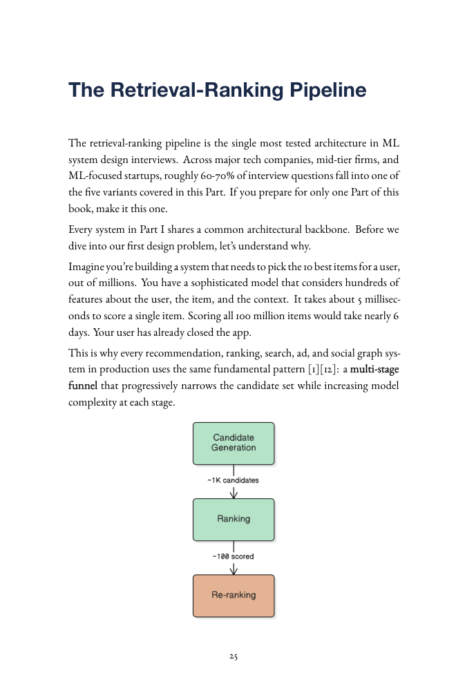
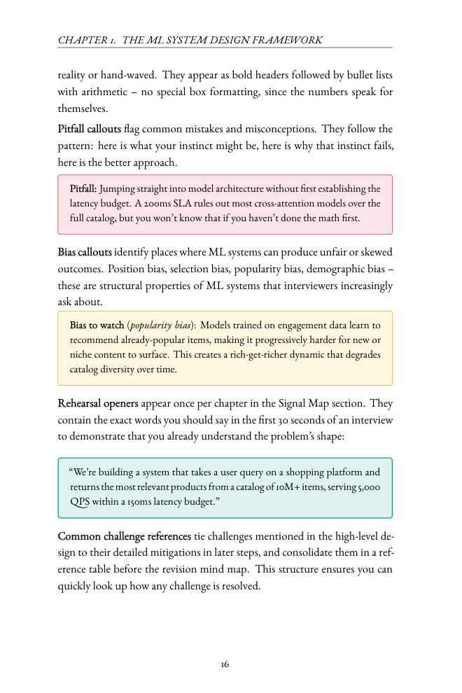

All books / ML System Design Interview
Available now
ML System Design Interview: A Signal-Based Approach
The architectural reasoning that separates a senior ML system design answer from a junior one, across every major problem family that comes up in industry interviews.
Paperback and Kindle537 pagesNew grad to staff level

Why this book
Not one recommender, repeated.
Distinct architectures
Each chapter is a structurally different system: different retrieval, objectives, data and serving constraints.Depth for every level
Layered so a new grad follows the main thread and a staff engineer still finds the follow-up answers.Past the model
Every chapter covers serving, monitoring, feedback loops and failure modes, where senior answers pull ahead.Chapters
Twelve chapters, one framework.
- 1. The frameworkThe 8-step approach: breadth first, then depth where the interviewer pulls.
- 2. Recommendation systemsThe retrieval-ranking funnel, two-tower retrieval and approximate nearest-neighbour search.
- 3. Content and feed rankingMulti-objective scoring, and why the hide button matters most.
- 4. Ad click predictionAuctions, eCPM and why calibration is the price.
- 5. Search rankingQuery understanding, learning to rank and interleaving.
- 6. People You May KnowGraph-first retrieval and symmetric scoring.
- 7. RAG and knowledge systemsChunking, hybrid retrieval and cite-or-abstain.
- 8. LLM serving and AI agentsKV cache, PagedAttention, continuous batching and agent loops.
- 9. Content safetyAn adversarial classification cascade with asymmetric error costs.
- 10. Representation learningContrastive embeddings and distillation for similarity and search.
- 11. Forecasting and anomaly detectionBacktesting, prediction intervals and hierarchical forecasts.
- 12. ML infrastructure platformsFeature store, training, serving and experiments for other ML engineers.
Sample pages
Diagrams and callouts on every system.

